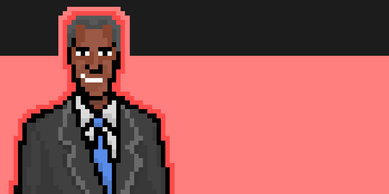

DEMOCRATS

JONATHAN JACKSON
“I am proud that I worked
to secure voting rights,
expand economic programs,
and investigate child
smuggling through letters
to Homeland Security.”
Open Stat Block
REPUBLICANS

MARCUS LEWIS
“The 1st District has been invaded
by these illegal aliens and they
are allowed to receive [money]
and resources that should be going
to the residents of the district,
especially the Black Residents.”
Open Stat Block

MONTELLE GAJI
“Voters in my district are fed
up with the loss of resources (access
to parks and community centers)
and loss of property value due to
tents and migrants on properties
they own.”
Open Stat Block